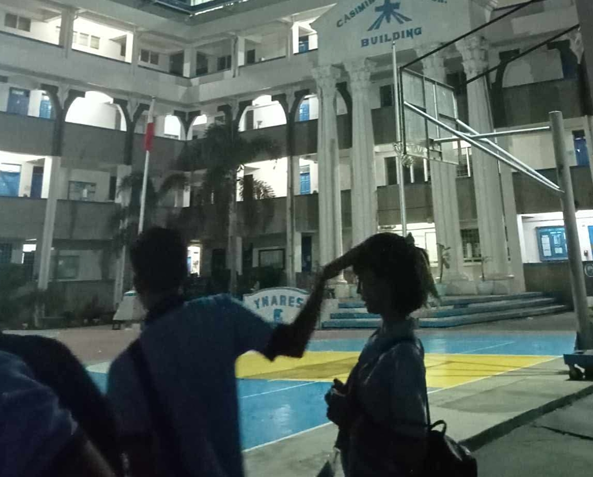

Hey my aii aii this message is for you hehehhe cause your are amazing girlfriend and baby.
First of all I just want to tell you that I know you always doing your best and manalo matalo sa life kasama mopo ako kaya sa assessment mopo hindi ako mangingielam just enjoy it and gawin mopo ang nais mo andito lang ang koii proud lagi, kapag napapagod ka or naiinis just tell me koii is your open wall na pwedeng mag write ng nais mong sabihin about sa mundo or about sa kahit ano and Im just telling hope the best sa assessment and sa pag review mopo 🥰
Second I love you hehehehhee sempre love kita nawa'y maka hanap tayo ng maayos na mapag oojtihan yung good community di bali ng onti lang matutunan basta maayos na environment panalo na tayo kasi sa outside world malapit na natin itong harapin ng tayo lang hindi tayo nag mamadali but we looking forward gagawin natin mga plano natin aii mag bubuild ng house ng stable life at eenjoy natin ang mundong nilikha ni God kasi naniniwala ako na nilikha ka at ako para maexperience ang buhay dito sa lupa at mag pasalamat sakanya.
third while we finding our journey maaring maraming pag subok ang dumaan satin but always remember na basta napag uusapan natin ito mananalo tayo kasi communication is the key in everything kapag di kapa ready kausapin ako once na may pag tatalo tayo or misunderstanding I hope you don't reject me or throw my hands and even my head maybe it to much if iaask ko sayo to kapag may misunderstanding tayo but ito yung way kopo of telling na no matter what happen I will choose to stay on your side kahit na mad ka sakin sa mga time nayun ayun lang yung paraan ko to calmdown myself and think hindi ako mag kukulit pero mag stay ako sa balikat mo sa kamay mo. that's how I handle my emotion sinasabi koto sayo kahit ginawa mona hindi moko nilalayuan di moko inaalis and thank you so muchh kaya sa mga darating napag subok pa satin labanan natin na mag kasama.
lastly iniisip mo siguro bakit ko to sinasabi? and reason I just want to reassure you na Love na Love kita at kasama ka sa aking mga plano at nag eexist ka sa life ko at inaappreciate ko iyun ng sobra kaya aii thank youu po and gawin mo po ang iyong best I will pray for the best result hehehe no pressure.